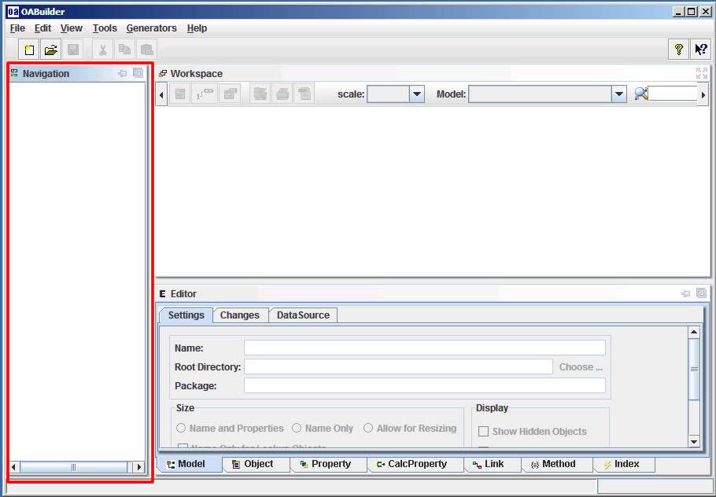
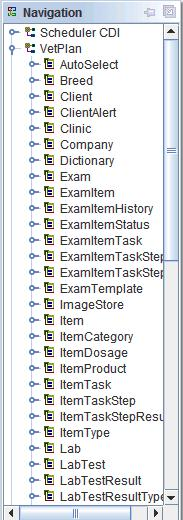
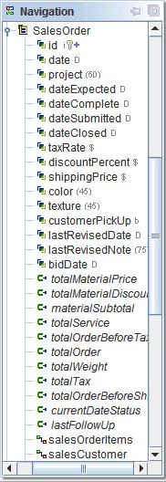
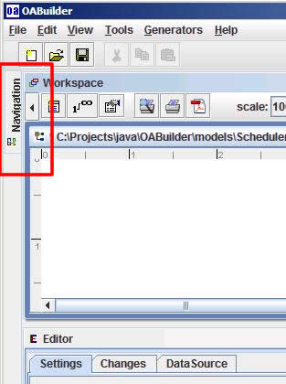
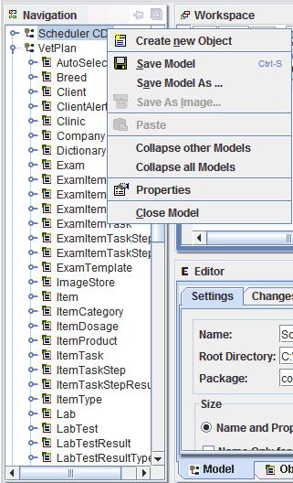
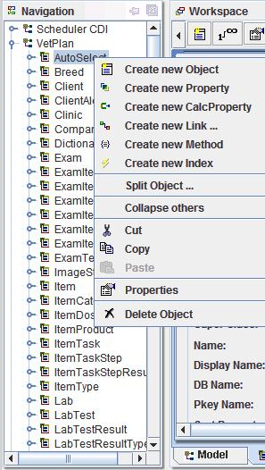
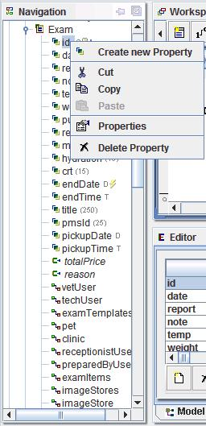
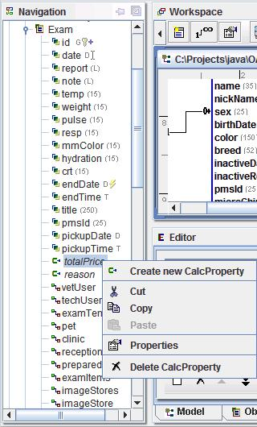
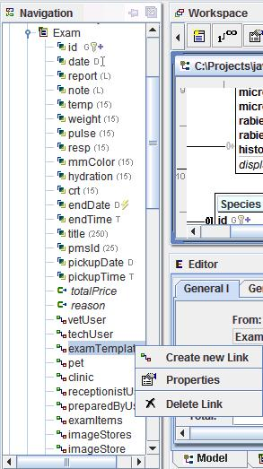
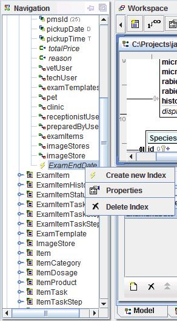

Navigation
The navigation area is a tree component that displays all open models.

A model expanded to show objects

An object expanded to show data about the object.

A "docked" navigation pane.

Menu options for a model, right-click on the model name.

Menu options for an object

Menu options for object properties

Menu options for Calculated properties

Menu options for Object links

Menu options for Object indexes
